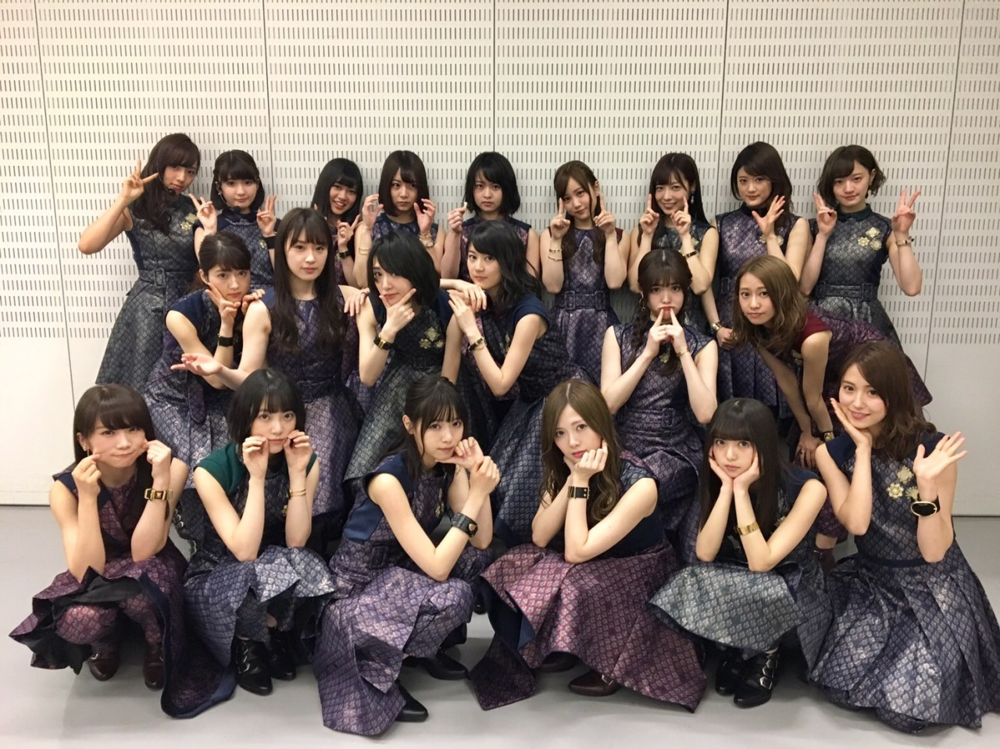
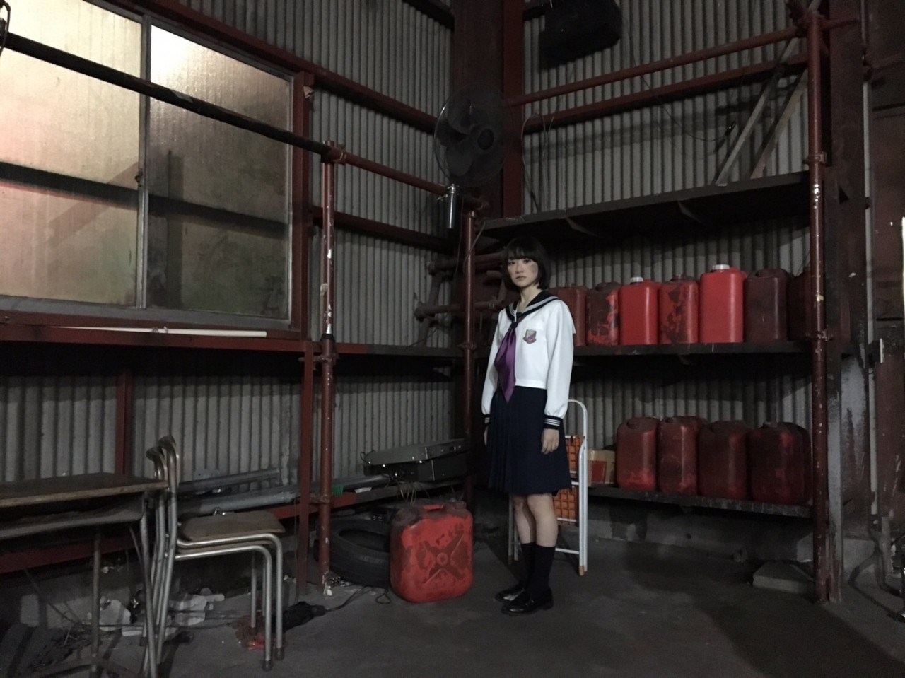

| 2017/03 18 Sat | 生駒里奈 手首の柔軟の素晴らしさ |
昨日はミュージックステーションさんにて、
インフルエンサー初披露でした！
観てくださったみなさん感想どうもありがとうございます(*´꒳`*)
ピコ太郎さんにお久しぶりにお会いして、
ご挨拶した際に、
生駒ちゃんの髪型はミカサ・アッカーマンですか？
と言われましたが、
違います笑
そこでミカサ出てくるあたりさすがピコ太郎さんです(*´꒳`*)
世の中の髪の毛の流行りがドライヘアになったとしても。
私はずっとウェットスタイル貫く！
すきだからっ！！

21人全員で、
乃木坂では今まで挑戦してこなかったジャンルのダンスと共にパフォーマンスしました。
あ〜
踊るの、表現するの楽しいよ！
すっごくすっごく楽しい(*´꒳`*)☆☆
教えて下さるダンサーさんね、
同い年とか年下の方いてね、
だからこそ刺激いっぱい貰えるんです！！
私も上手くなりたいって！！
インフルエンサー期間中にレベル上げるぞ絶対！！
あと、
個人PV の予告見てくださいましたか〜？

廃墟的なっ！セーラー服的なものがやりたいですってお願いしました笑
世界観も好きです私(*´꒳`*)
この撮影場所
いろんなレイヤーさんが撮りに来るところで、
私の親友も来てたっ！
電話したっ！！笑
撮ってくださったカメラマンさんがね、
こち亀のポスターとかパンフレットにのる写真を撮ってくださった方で、
最近はNARUTOとかパタリロとか撮ったんだよ〜ってお話ししながら撮影してました(*´꒳`*)
久しぶりに乃木坂の現場でお会いして嬉しかったし、
なんだかこち亀パワーを感じました☆
あ！
舞台 こちら葛飾区亀有公園前派出所の
DVD発売されました〜♡
ぜひぜひ手に取ってみてください！！
よろしくお願いします(*´꒳`*)！
さっ、
準備しよー(*´꒳`*)
へばなっ★彡